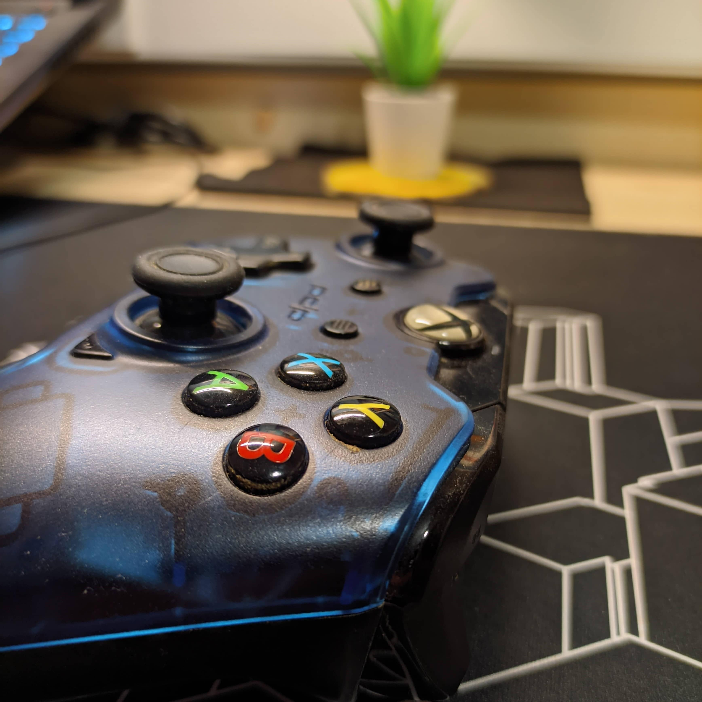

While not being much of a gamer myself, I have always liked the way Microsoft had approached their controller
designs with XBOX. The controller designed by Sony for the Playstation consoles were never the way to go, in
my opinion.

Input layout on the controller
Ergonomic Design
The ergonomic design makes this controller so comfortable to hold. It gives the feeling of holding a really
well designed mouse. Using the controller for long hours is such a fine experience that the user almost
forgets about holding it while being immersed in the gaming session. The design is well made for the
placement of the thumbs as well as all of the other fingers. Even with slippery hands, its quite easy to
have a firm grip on the product.
Ergonomic design on the controller
Competition with PS5
A fun fact though; The controller on the Playstation 5 (PS5) is a good example of a brand implementing good
design, as they are built ergonomically to directly compete with the XBOX controller. Sony was quick to
realise the better design given by Microsoft, and took inspiration for their next iteration of consoles.